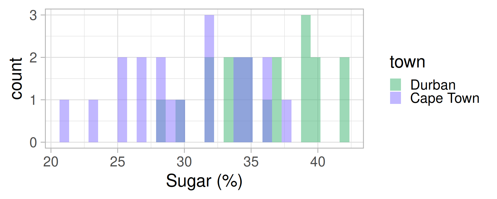
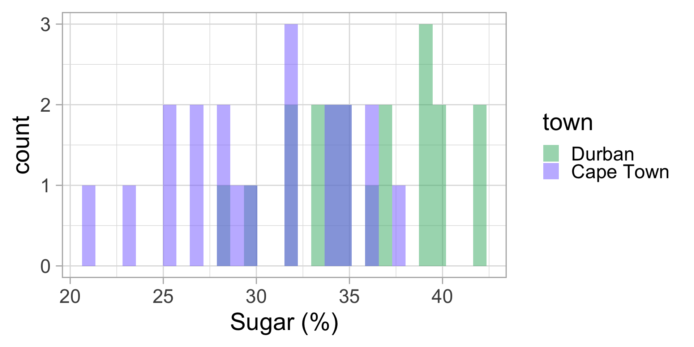
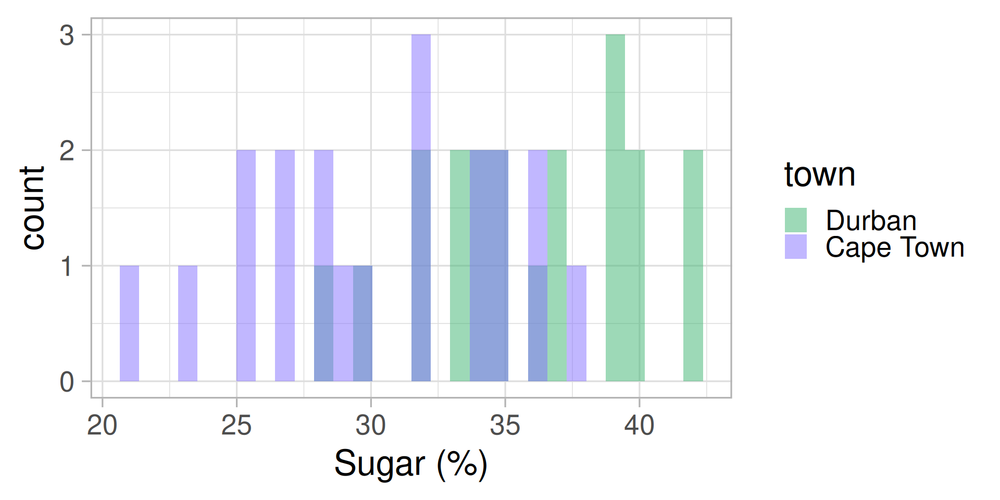
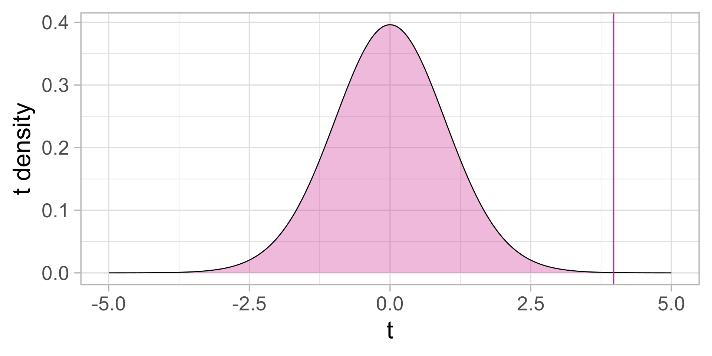
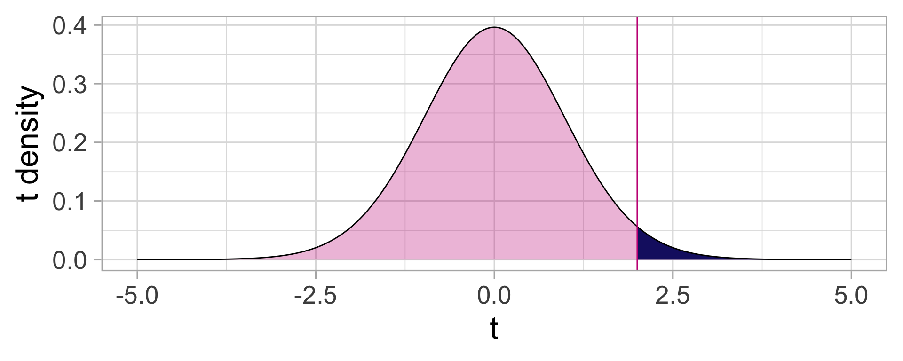
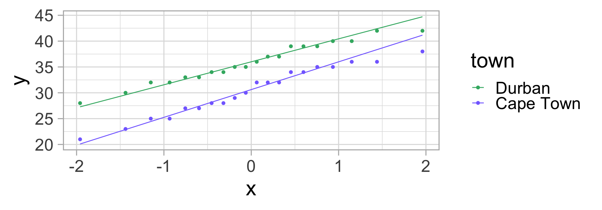
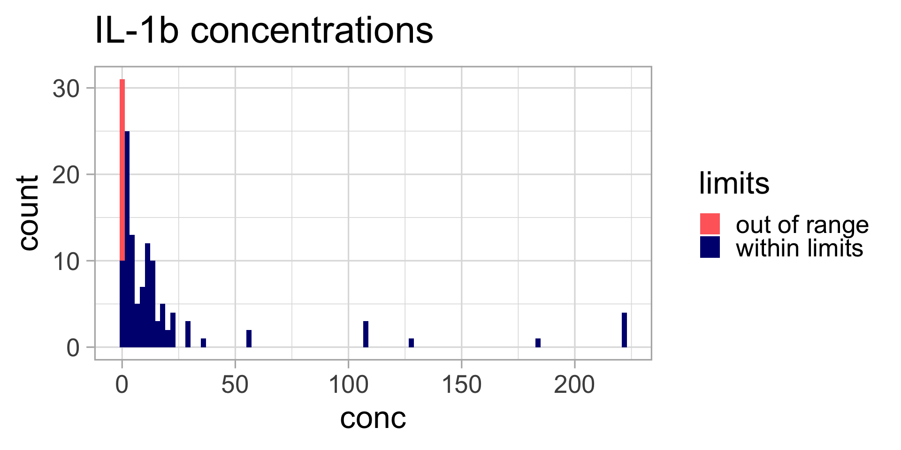
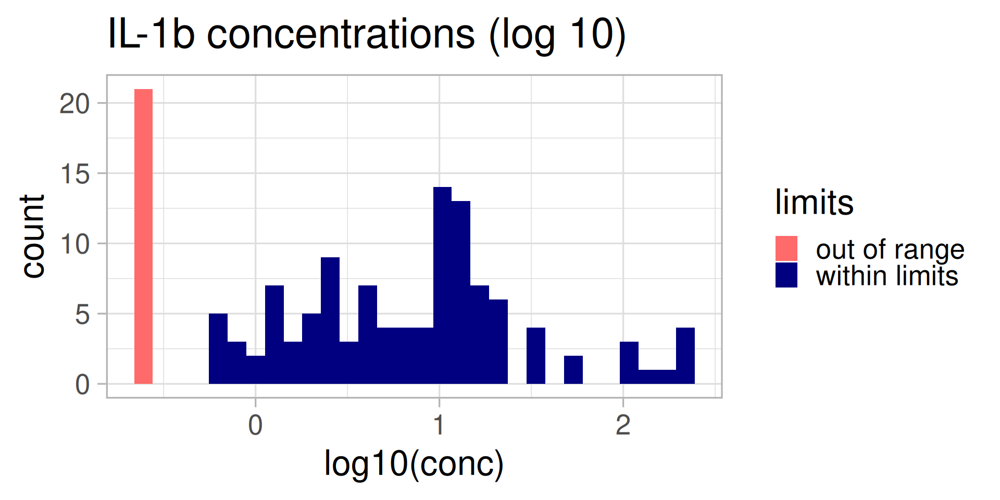
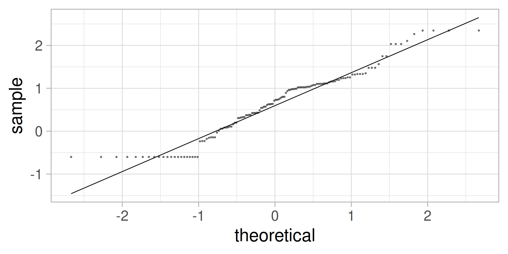
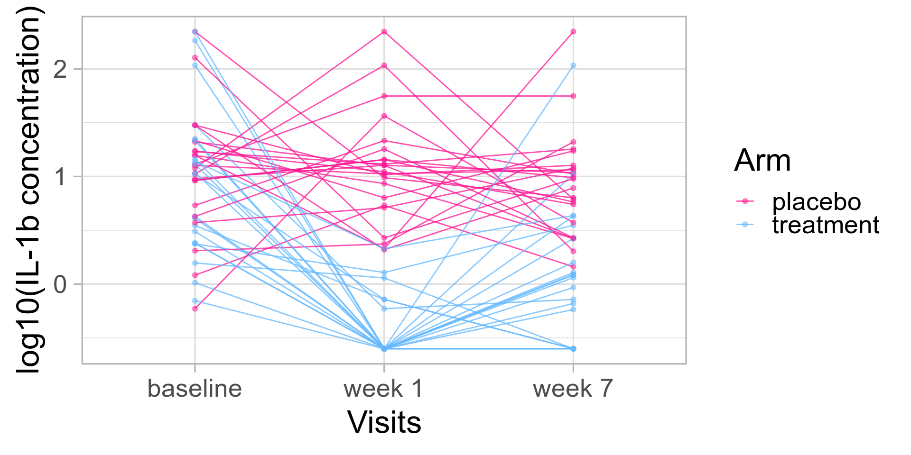

Hypothesis testing, data transformation, longitudinal displays
Dr. Laura Symul - UC Louvain
Workshop materials are at:
https://elsherbini.github.io/durban-data-science-for-biology/
Hello! 👋👋
My name is Laura Symul.
🎓 I am an assistant professor in non-clinical biostatistics at the University of Louvain in Belgium.
💙 I love statistics AND climbing, hiking, and painting.

🎯 Goals for this module
- Understand what hypothesis testing is
- Learn about parametric and non-parametric tests
- Learn how to perform (t-)tests in
R
- Understand when and why to transform data
- Understand what is “multiple testing” & how to adjust for it.
- Learn how to display longitudinal data
- Understand the limitations inherent to compositional data
💬 Discussions: discord
Ask questions at #workshop-questions on https://discord.gg/UDAsYTzZE.

Wooclap
Go to the event on wooclap

Malva pudding
My friend told me that Malva puddings in Durban are usually much sweeter than those sold in Cape Town.
Is this true?
Is my friend right?
Are Malva puddings in Durban sweeter than those in Cape Town?
How do we find out?
Malva pudding and hypothesis testing
We have a claim:
“Malva puddings in Durban are sweeter than those in Cape Town”.
We need to design and plan an experiment to collect data to test this claim.
Statistically, this is hypothesis testing.
Hypothesis testing 🤔
What is hypothesis testing? 🤔
Hypothesis testing is a method for making decisions about the value of a population parameter.
- A population is not necessarily a group of humans. In statistics, a population is a group of individuals, objects, or measurements that are of interest to us. For example: the population of Malva puddings in Durban.
- A population parameter is a numerical value that describes a population. For example: the average sugar content of Malva puddings in Durban.
Hypothesis testing is a critical step of the scientific method
- State a claim that we want to verify (or disprove) 🤓
- Design an experiment to test the claim 📝
- Plan and execute the experiment (= collect the data) 🔎🔎
- Exploratory analysis of the data and visualization 📈📈
- Hypothesis testing
- Interpretation (and predictions) 💁
How many samples do we need?
Do we need to measure the sugar content of ALL Malva puddings in Durban and Cape Town?
🥮🥮🥮🥮🥮🥮🥮🥮🥮🥮🥮🥮🥮🥮🥮🥮🥮🥮🥮🥮🥮
❌ No, we can to collect a representative sample from both populations.
💡 The number of samples we need to collect depends on the variability of sugar content in both populations and the minimum difference in sugar we want to detect.
🤓 Formally, we would need to do a power analysis to estimate the number of samples needed.
Malva pudding data
Let’s pretend we have done a power analysis. 🤫
→ We need to collect 20 samples from each “population”
We go to the lab and measure the sugar content of all 40 puddings. Let’s display this data.
Malva puddings: conclusions?
Let’s compute the mean and standard deviation for both groups.

| town | mean sugar (%) | sd |
|---|---|---|
| Durban | 35.85 | 3.92 |
| Cape Town | 30.35 | 4.78 |
Do we think my friend was right?
🤔 Could it not be just by chance that the average sugar content in Durban is higher than in Cape Town?
The Null and Alternative hypotheses.
Formally, in statistics, to do a test, we need to define a pair of hypotheses: the Null and the Alternative hypotheses.
⚖️ The Null hypothesis (\(H_0\)) is the “status quo” claim: usually, it assumes no effect, or no differences between groups.
For example, the average sugar content in Malva puddings is the same in both towns:
\[H_0: \mu_{C} = \mu_{D}\]
The Null and Alternative hypotheses.
The alternative hypothesis (\(H_a\)) is the complement of the Null hypothesis. It is usually the hypothesis we want to prove.
Here:
\[H_a: \mu_C \neq \mu_D\]
The Null and Alternative hypotheses.
We can do “two-sided” tests, like above, or “one-sided” tests.
In “one-sided” tests, the Null and Alternative hypotheses are of the form:
\[H_0: \mu_{C} \geq \mu_{D}\] and
\[H_a: \mu_C < \mu_D\]
(or the reverse).
The Null and alternative hypothesis for Malva puddings
\[H_0: \mu_{D} \leq \mu_{C}\] and
\[H_a: \mu_D > \mu_C\]
The alternative is my friend’s claim (Malva puddings in Durban are sweeter than those in Cape Town).
Is it enough to just compute the means?
| town | mean sugar (%) | sd |
|---|---|---|
| Durban | 35.85 | 3.92 |
| Cape Town | 30.35 | 4.78 |
Would it be possible to observe these values if the Null hypothesis was true?
The \(p\)-value
✨The \(p\)-value is the probability of observing a test statistic as extreme as the one we observed, under the Null hypothesis.
The \(p\)-value is a number between 0 and 1.
0 = impossible / never
1 = always
Hypothesis testing: the test statistic
Remember:
The \(p\)-value is the probability of observing a test statistic as extreme as the one we observed, under the Null hypothesis.
🤔 What is a test statistics?
A test statistic is a numerical value that we compute from our data, and that we will use to make a decision about the Null hypothesis.
Hypothesis testing: the test statistic
A naive test statistic for comparing means of two populations could be simply to compute the difference in means.
Under the Null (= assuming the Null is true and \(\mu_D \leq \mu_C\)), this difference should be small or below zero.
So a large positive value would be quite unlikely under the Null and have a small \(p\)-value.
A less naive test statistic
A more sophisticated test statistic is the \(t\)-statistic which takes into account the variability in the data.
\[😱😱😱\ \ \ \ T = \frac{\bar{x}_D - \bar{x}_C}{\sqrt{\frac{S^2_D}{n_D} + \frac{S^2_C}{n_C}}} \ \ \ \ 😱😱😱\]
IF
the two populations follow a normal distribution OR
the number of samples is larger than ~40 in each group
THEN this \(T\) test statistics follows a \(t\) distribution.
Back to the pudding data
Let’s compute the \(t\)-statistic for the Malva pudding data.

| town | mean sugar (%) | sd |
|---|---|---|
| Durban | 35.85 | 3.92 |
| Cape Town | 30.35 | 4.78 |
Difference in means: 5.5
\(t\)-statistics: 3.976
The \(t\)-distribution under the Null
Under the Null, the distribution of \(t\)-statistics is the \(t\) distribution (looks like a “narrower” normal distribution):
It is VERY unlikely to observe such a large \(t\) statistics assuming that the two average sugar contents are the same between the two towns.
The \(p\)-value
Remember: The \(p\)-value is the probability of observing a test statistic as extreme as the one we observed, under the Null hypothesis.

The \(t\)-test
What we just did is called a \(t\)-test.
The assumptions for a \(t\)-test are:
the two populations follow a normal distribution OR
the sample sizes are larger than ~40 in each group
⚠️ Were we allowed to do a \(t\)-test for the pudding data?
Normal Malva?
Did we have more than 40 samples in each group?
. . . Were our data normally distributed?
QQ-what?
A more formal way to check that data are normally distributed is to make a QQ-plot.

If the dots are close to the line, that indicates that the data is compatible with a normal distribution.
\(\rightarrow\) We can use the \(t\)-test ✅
The \(t\)-test in R
In R, we can do a \(t\)-test using the function t.test.
Welch Two Sample t-test
data: sugar by town
t = 3.9761, df = 36.604, p-value = 0.0001584
alternative hypothesis: true difference in means between group Durban and group Cape Town is greater than 0
95 percent confidence interval:
3.165654 Inf
sample estimates:
mean in group Durban mean in group Cape Town
35.85 30.35 🫵 Hands-on exercises
Read the Module 6 Quarto document and execute all chunks until the “data transformation” section.
🙅 Enough Pudding! Let’s science 🧪
Our 1st scientific question is:
“Does IL-1\(\beta\)” (a cytokine) have a different concentration in samples from individuals diagnosed with BV (bacterial vaginosis) or not?”
What is the Null and Alternative hypothesis?
\[H_0: \mu_{BV} = \mu_{H} \]
\[H_a: \mu_{BV} \neq \mu_{H}\]
Let’s display the data
Does this look normal?
What should we do?
Data transformation
Does this look normal?
QQ-plot
Not perfect, but not too bad.
IL-1\(\beta\) by BV status

\(t\)-test?
# A tibble: 1 × 2
BV Healthy
<int> <int>
1 46 86The data roughly follow a normal distribution AND we have more than 40 samples in each group, so we can use a \(t\)-test:
Welch Two Sample t-test
data: logconc by BV
t = 6.5449, df = 116.4, p-value = 1.672e-09
alternative hypothesis: true difference in means between group BV and group Healthy is not equal to 0
95 percent confidence interval:
0.5332052 0.9959381
sample estimates:
mean in group BV mean in group Healthy
1.1245273 0.3599557 🫵 Hands-on exercises
Continue on the Module 6 Quarto document and execute all chunks until the “Non-parametric tests” section.
What if?
😬 What if the \(t\)-test assumptions weren’t met?
✅ We can use another test such as the Wilcoxon rank sum test
Parametric vs non-parametric tests
The \(t\)-test is a parametric test.
🤔 What does it mean?
It assumes that the populations can be described by a distribution characterized by a few parameters (e.g., mean and standard deviation).
For example: the Normal distribution: \(N(\mu, \sigma^2)\)
Non-parametric tests
Non-parametric tests do not make any assumption about the distribution of the data.
The “equivalent” of the \(t\)-test is the Mann-Whitney U test or the Wilcoxon rank sum test.
In R, we can use the wilcox.test function to run this test.
Why not always use non-parametric tests?
Because these tests have less power than parametric tests.
The power of a test is the probability of rejecting the Null hypothesis when it is false.
It is the ability of a test to detect small but real effects.
🫵 Hands-on exercises
Continue on the Module 6 Quarto document and execute all chunks until the “Multiple testing” section.
☕️ BREAK
Hypothesis testing: summary
☝️ The first and most important step is to have a clear and testable scientific question.
⚖️ Then, one can define the null and alternative hypotheses.
❓Depending on the question and the hypotheses, one must pick an appropriate statistical test or model.
- 🙋 For complex questions/models, it might be necessary to consult a statistician.
🧑💻 Most common tests have been implemented in
R. Read their documentation carefully and check their assumptions.
What about other cytokines?
🤔 Can we repeat the same test we did for IL-1\(\beta\) for all the other cytokines?
🚨 Yes, but be careful about multiple testing!
Multiple testing
Remember the \(p\)-value definition:
The \(p\)-value is the probability of observing a test statistic as extreme as the one we observed, under the Null hypothesis.
If this probability is smaller than, let’s say 1/20 (0.05), we reject the Null hypothesis. But we still have 1 chance / 20 to be wrong!
So, as we perform many tests, we are more likely to obtain small \(p\)-values by chance.
🫵 Hands-on exercises
Explore the effects of multiple testing using simulations and check the p.adjust function and the p.adjust.methods.
Continue on the Module 6 Quarto document and execute all chunks until the “Displaying longitudinal data” section.
➡️➡️➡️ Longitudinal design
Remember the study design of the data we are analyzing:

Should we try to display the data in a way that highlights the “trajectories” of participants along the study?
🧠 Remember: left_join
First, we need to join the cytokine data with the sample data so we have the study arm and the time-point for each sample:
elisa <-
elisa |>
mutate(logconc = log10(conc)) |>
left_join(sample_info, by = join_by(sample_id))
elisa |> head() # A tibble: 6 × 8
sample_id cytokine conc limits logconc pid time_point arm
<chr> <chr> <dbl> <chr> <dbl> <chr> <chr> <chr>
1 SAMP094 IL-1a 174. within limits 2.24 pid_01 baseline placebo
2 SAMP094 IL-10 0.767 out of range -0.115 pid_01 baseline placebo
3 SAMP094 IL-1b 5.39 within limits 0.732 pid_01 baseline placebo
4 SAMP094 IL-8 48.3 within limits 1.68 pid_01 baseline placebo
5 SAMP094 IL-6 5.07 within limits 0.705 pid_01 baseline placebo
6 SAMP094 TNFa 0.471 out of range -0.327 pid_01 baseline placebo🎁 Bonus: character string manipulation
Since we’ll want to display the visit data, we can “polish” the labels of the time-point column so that they read nicely.
Right now, the visit labels are:
[1] "baseline" "week_1" "week_7" 🧠 Remember: factor
# A tibble: 6 × 8
sample_id cytokine conc limits logconc pid time_point arm
<chr> <chr> <dbl> <chr> <dbl> <chr> <chr> <chr>
1 SAMP094 IL-1a 174. within limits 2.24 pid_01 baseline placebo
2 SAMP094 IL-10 0.767 out of range -0.115 pid_01 baseline placebo
3 SAMP094 IL-1b 5.39 within limits 0.732 pid_01 baseline placebo
4 SAMP094 IL-8 48.3 within limits 1.68 pid_01 baseline placebo
5 SAMP094 IL-6 5.07 within limits 0.705 pid_01 baseline placebo
6 SAMP094 TNFa 0.471 out of range -0.327 pid_01 baseline placeboWhich columns should be converted to factors?
IL-1\(\beta\) longitudinal patterns
🫵 Hands-on exercises
Continue on the Module 6 Quarto document and execute all chunks until the “Compositional data” section.
🎁 Bonus: there is a section on “paired tests” that you can read if you want to learn more about the paired \(t\)-test and the Wilcoxon signed rank test.
☯ Compositional data
What are compositional data?
Multivariate data are compositional when the variables are expressed as proportions of a whole.
Remember the flow cytometry data?
Sometimes, data are expressed as “proportions of cells X among all cells”.
⚠️ What’s the problem with compositional data?
The proportions are not independent.
If we have 3 cell types (A, B, and C) and in one condition, only cells A increase in number, when expressed “compositionally”, it may look like cells B and C are decreasing.
Potential solutions
There is no “one-size-fits-all” for compositional data.
In some cases, some smart solutions have been proposed.
For example, for RNA-seq data, the DESeq2 package uses a “regularized log” transformation that allows to use standard statistical tests.
That transformation assumes that most genes are not differentially expressed but that only works for datasets with a large number of features.
📆 See you at the next workshop!
If you are interested in analysing compositional data such as gene expression data or microbiome data, register for the next workshop!
🫵 In the meanwhile, there are some examples and exercises in the Module 6 Quarto document that you can try.
Module 6 Summary
☝️ Be clear with the scientific questions you have
📆 Plan your experiments and collect your data so you can answer your questions☝️ Get to know your data
📊 Make your "table 1", check for confounders📈 Do exploratory visualizations🤓 Answer your questions
📈 Display your data in a way that highlights the answer to your questions📊 Use the appropriate statistical tests (and consult a statistician *before* and after collecting your data if your question requires something more complex than a two-sample test)